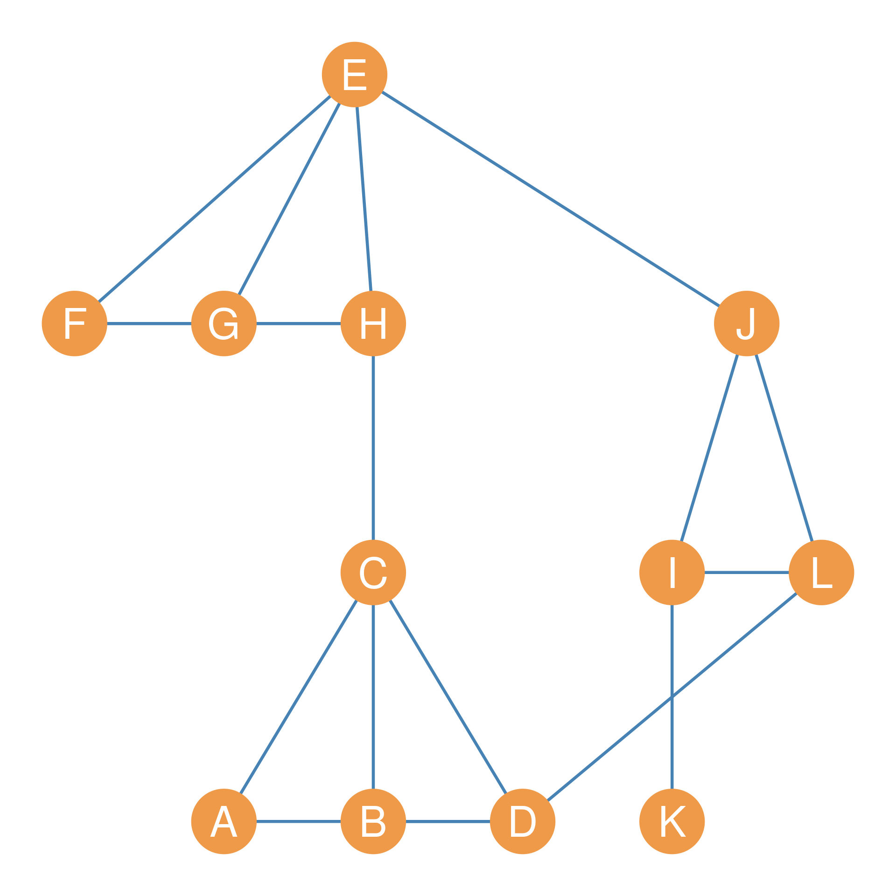
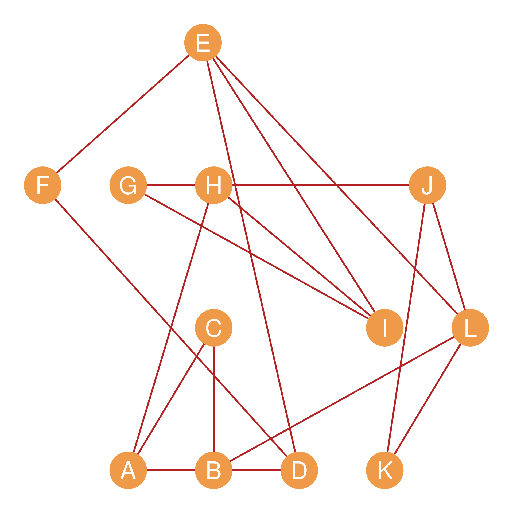
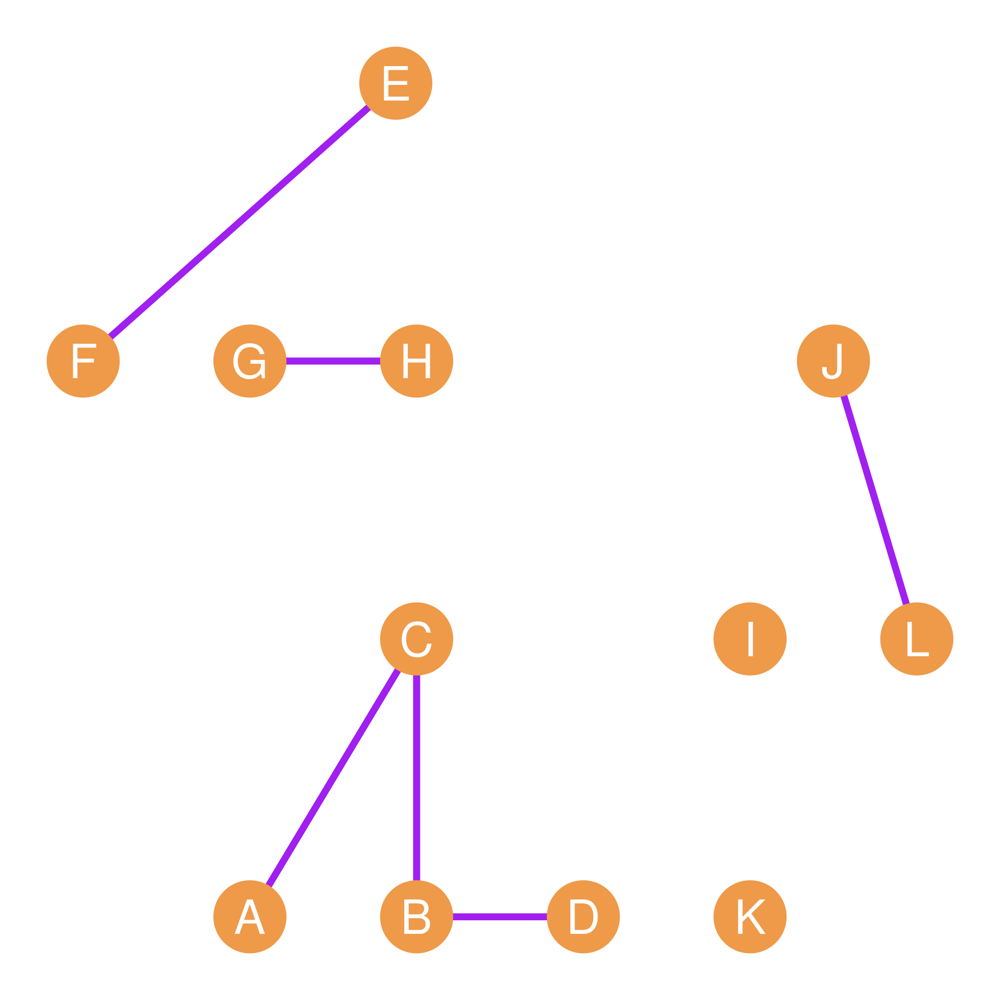
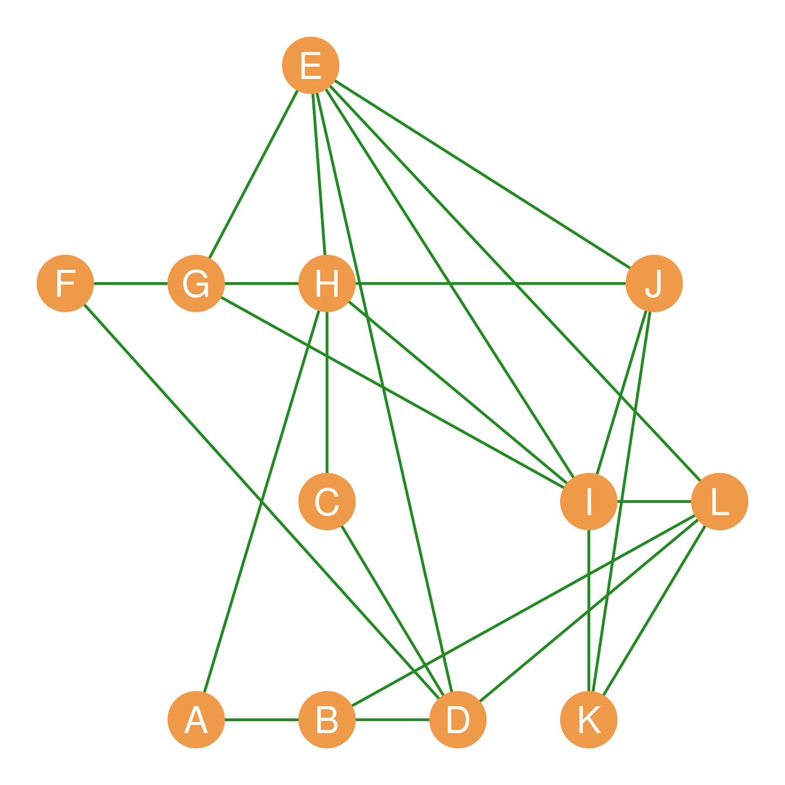

| 3 | 3 | 2 | 6 | 5 |
| 4 | 6 | 9 | 5 | 3 |
| 9 | 9 | 9 | 3 | 8 |
| 7 | 9 | 3 | 4 | 1 |
| 7 | 5 | 7 | 9 | 9 |
16 Basic Matrix Operations
Since matrices are just arrays of numbers, one of the most powerful things we can do is perform arithmetic, algebraic, and summary operations on them. These include calculating row and column totals, adding or subtracting matrices representing different relations, multiplying them, taking powers, and transposing them. In this lesson, we cover these basic matrix operations and explain their direct relevance to the analysis of social networks.
Our primary running example for multi-matrix operations will be the pair of graphs shown in Figure 16.1. Suppose this is a network of twelve people who work at a (very) small company. We have recorded two types of relationships for each pair of persons: Whether they hang out together after work (a “hang out” relation), and whether they get assigned to work together in team projects (a “co-working” relation).
Figure 16.1 (a), composed of nodes joined by blue edges, represents hanging out relations; Figure 16.1 (b) represents co-working relations. The corresponding adjacency matrices for the Figure 16.1 networks are shown in Table 16.1; Table 16.1 (a) (let’s call it \(\mathbf{H}\)) records hanging out relations and Table 16.1 (b) (let’s call it \(\mathbf{C}\)) records co-working relations.




| A | B | C | D | E | F | G | H | I | J | K | L | |
|---|---|---|---|---|---|---|---|---|---|---|---|---|
| A | -- | 0 | 1 | 1 | 0 | 0 | 0 | 0 | 0 | 0 | 0 | 0 |
| B | 0 | -- | 1 | 1 | 0 | 0 | 0 | 0 | 0 | 0 | 0 | 0 |
| C | 1 | 1 | -- | 1 | 0 | 0 | 0 | 1 | 0 | 0 | 0 | 0 |
| D | 1 | 1 | 1 | -- | 0 | 0 | 0 | 0 | 0 | 0 | 0 | 1 |
| E | 0 | 0 | 0 | 0 | -- | 1 | 1 | 1 | 0 | 1 | 0 | 0 |
| F | 0 | 0 | 0 | 0 | 1 | -- | 1 | 1 | 0 | 0 | 0 | 0 |
| G | 0 | 0 | 0 | 0 | 1 | 1 | -- | 1 | 0 | 0 | 0 | 0 |
| H | 0 | 0 | 1 | 0 | 1 | 1 | 1 | -- | 0 | 0 | 0 | 0 |
| I | 0 | 0 | 0 | 0 | 0 | 0 | 0 | 0 | -- | 1 | 1 | 1 |
| J | 0 | 0 | 0 | 0 | 1 | 0 | 0 | 0 | 1 | -- | 0 | 1 |
| K | 0 | 0 | 0 | 0 | 0 | 0 | 0 | 0 | 1 | 0 | -- | 0 |
| L | 0 | 0 | 0 | 1 | 0 | 0 | 0 | 0 | 1 | 1 | 0 | -- |
| A | B | C | D | E | F | G | H | I | J | K | L | |
|---|---|---|---|---|---|---|---|---|---|---|---|---|
| A | -- | 1 | 1 | 0 | 0 | 0 | 0 | 1 | 0 | 0 | 0 | 0 |
| B | 1 | -- | 1 | 1 | 0 | 0 | 0 | 0 | 0 | 0 | 0 | 1 |
| C | 1 | 1 | -- | 0 | 0 | 0 | 0 | 0 | 0 | 0 | 0 | 0 |
| D | 0 | 1 | 0 | -- | 1 | 1 | 0 | 0 | 0 | 0 | 0 | 0 |
| E | 0 | 0 | 0 | 1 | -- | 1 | 0 | 0 | 1 | 0 | 0 | 1 |
| F | 0 | 0 | 0 | 1 | 1 | -- | 0 | 0 | 0 | 0 | 0 | 0 |
| G | 0 | 0 | 0 | 0 | 0 | 0 | -- | 1 | 1 | 1 | 0 | 0 |
| H | 1 | 0 | 0 | 0 | 0 | 0 | 1 | -- | 1 | 0 | 0 | 0 |
| I | 0 | 0 | 0 | 0 | 1 | 0 | 1 | 1 | -- | 0 | 0 | 0 |
| J | 0 | 0 | 0 | 0 | 0 | 0 | 1 | 0 | 0 | -- | 1 | 1 |
| K | 0 | 0 | 0 | 0 | 0 | 0 | 0 | 0 | 0 | 1 | -- | 1 |
| L | 0 | 1 | 0 | 0 | 1 | 0 | 0 | 0 | 0 | 1 | 1 | -- |
16.1 Row and Column Sums
Perhaps the most basic operation we can do on a single matrix is to compute its row sums and its column sums. Let’s first look at how this works on a general numeric matrix before exploring its powerful network properties.
Consider the matrix shown in Table 16.2. This matrix is of dimensions \(5 \times 5\), meaning it has five rows and five columns. Let’s call the matrix \(\mathbf{B}\).
16.1.1 Row Sums
The row sums of \(\mathbf{B}\) is written in sigma notation as:
\[ \sum_j b_{ij} \tag{16.1}\]
In this formula, \(i\) refers to the rows of the matrix and \(j\) refers to the columns. So the formula says, “to get the row sums, pick a row \(i\), and sum the cells across the columns \(j\).” So for instance, if \(i = 2\) (the second row), then Equation 16.1 turns into:
\[ \sum_{j=1}^{5} b_{2j} = 4 + 6 + 9 + 5 + 3 = 27 \tag{16.2}\]
The numbers in the sum are just the numbers in row two of Table 16.2. If we calculate the row sums of all the rows in the matrix, the result is a row sum vector, containing the total sum for the numbers in each row. For Table 16.2, the row sum vector is:
| 19 | 27 | 38 | 24 | 37 |
16.1.2 Column Sums
The column sums of a matrix work similarly. In sigma notation, the column sum for matrix \(\mathbf{B}\) is written as:
\[ \sum_i b_{ij} \tag{16.3}\]
Note that the subscript under the \(\sum\) symbol specifies \(i\) (meaning we are summing over the rows). Equation 16.3 says: “to get the column sums, pick a column \(j\), and sum each number down the rows \(i\).” So for instance, if \(j = 3\) (the third column), then Equation 16.3 turns into:
\[ \sum_{i=1}^{5} b_{i3} = 2 + 9 + 9 + 3 + 7 = 30 \tag{16.4}\]
The column sum vector for Table 16.2 is:
| 30 | 32 | 30 | 27 | 26 |
16.1.3 Row and Column Sums of the Symmetric Adjacency Matrix
What happens if we calculate the row and column sum vectors of a symmetric adjacency matrix corresponding to an undirected graph?
Let us go back to the undirected graph example, whose symmetric adjacency matrix \(\mathbf{H}\) (from hanging out relations) is shown in Table 16.1 (a). The row and column sums for this symmetric matrix are identical:
| A | B | C | D | E | F | G | H | I | J | K | L |
|---|---|---|---|---|---|---|---|---|---|---|---|
| 2 | 2 | 4 | 4 | 4 | 3 | 3 | 4 | 3 | 3 | 1 | 3 |
| A | B | C | D | E | F | G | H | I | J | K | L |
|---|---|---|---|---|---|---|---|---|---|---|---|
| 2 | 2 | 4 | 4 | 4 | 3 | 3 | 4 | 3 | 3 | 1 | 3 |
For any symmetric adjacency matrix, the row and column sum vectors are identical because \(a_{ij} = a_{ji}\). But what do these numbers represent? If you match them to the graph in Figure 16.1 (a), you will see that they are nothing but each node’s degree!
Thus, for an undirected graph, the row or column sums of the symmetric adjacency matrix give us the degrees of each node!
16.1.4 Row and Column Sums of the Asymmetric Adjacency Matrix
Now, what happens if we compute the row and column sums for an asymmetric adjacency matrix representing a directed graph?
Let’s construct a simple directed graph and calculate its row and column sums:
| A | B | C | D | E | F | G |
|---|---|---|---|---|---|---|
| 2 | 2 | 1 | 1 | 2 | 1 | 2 |
| A | B | C | D | E | F | G |
|---|---|---|---|---|---|---|
| 2 | 3 | 1 | 3 | 0 | 2 | 0 |
In a directed graph, the row sum vector and column sum vector are different, and each captures a separate, crucial graph property. The row sums of a directed adjacency matrix represent the directed graph’s outdegree set, summing up all the outgoing ties from node \(i\) to all other nodes \(j\). The column sums, by contrast, represent the directed graph’s indegree set, summing up all the incoming ties from all other nodes \(i\) to node \(j\). So in the directed case, the row and column sums pull apart a node’s outdegree and its indegree!
16.2 Matrix Addition and Subtraction
When we have two or more matrices of the same dimensions, we can perform cell-by-cell arithmetic on them. To add two matrices, we simply add up the corresponding entries in each cell. In matrix notation:
\[ \mathbf{H} + \mathbf{C} = h_{ij} + c_{ij} \tag{16.5}\]
Where \(h_{ij}\) is the corresponding entry for nodes \(i\) and \(j\) in the hanging out adjacency matrix \(\mathbf{H}\), and \(c_{ij}\) is the same entry in the co-working adjacency matrix \(\mathbf{C}\).
Why would we want to do this? If we were studying the network shown in Figure 16.1, we might be interested in which dyads have uniplex (single-stranded) relations and which have multiplex (multi-stranded) relations. While some actors in the network either hang out together or work together, some of them do both. Adding up the adjacency matrices shown in Table 16.1 will tell us who these are. The result is shown in Table 16.5.
| A | B | C | D | E | F | G | H | I | J | K | L | |
|---|---|---|---|---|---|---|---|---|---|---|---|---|
| A | -- | 1 | 2 | 1 | 0 | 0 | 0 | 1 | 0 | 0 | 0 | 0 |
| B | 1 | -- | 2 | 2 | 0 | 0 | 0 | 0 | 0 | 0 | 0 | 1 |
| C | 2 | 2 | -- | 1 | 0 | 0 | 0 | 1 | 0 | 0 | 0 | 0 |
| D | 1 | 2 | 1 | -- | 1 | 1 | 0 | 0 | 0 | 0 | 0 | 1 |
| E | 0 | 0 | 0 | 1 | -- | 2 | 1 | 1 | 1 | 1 | 0 | 1 |
| F | 0 | 0 | 0 | 1 | 2 | -- | 1 | 1 | 0 | 0 | 0 | 0 |
| G | 0 | 0 | 0 | 0 | 1 | 1 | -- | 2 | 1 | 1 | 0 | 0 |
| H | 1 | 0 | 1 | 0 | 1 | 1 | 2 | -- | 1 | 0 | 0 | 0 |
| I | 0 | 0 | 0 | 0 | 1 | 0 | 1 | 1 | -- | 1 | 1 | 1 |
| J | 0 | 0 | 0 | 0 | 1 | 0 | 1 | 0 | 1 | -- | 1 | 2 |
| K | 0 | 0 | 0 | 0 | 0 | 0 | 0 | 0 | 1 | 1 | -- | 1 |
| L | 0 | 1 | 0 | 1 | 1 | 0 | 0 | 0 | 1 | 2 | 1 | -- |
Table 16.5 shows that the \(BC\) dyad has a multiplex relation (there is a “2” in the corresponding cell entry) and so do the \(AC\), \(FH\), \(GH\), \(EF\), and \(JL\) dyads. A graph showing the nodes linked only by multiplex relations (hanging out and co-working) is shown in Figure 16.1 (c).
Note that matrix subtraction works exactly the same way:
\[ \mathbf{H} - \mathbf{C} = h_{ij} - c_{ij} \tag{16.6}\]
To subtract two matrices, we simply subtract the corresponding entries in each cell. Why would we ever want to do this? Suppose we want to focus on dyads in the network connected by a single, special-purpose uniplex tie, while disregarding both disconnected and multiplex-connected dyads.
Taking the absolute value of each of the subtracted cell entries (which turns negative entries into positive ones), written as \(|h_{ij} - c_{ij}|\), will result in a binary matrix that contains a 1 only for people who are hangout buddies or workmates but not both. Such a matrix is shown in Table 16.6 and corresponds to the green graph shown in Figure 16.1 (d).
| A | B | C | D | E | F | G | H | I | J | K | L | |
|---|---|---|---|---|---|---|---|---|---|---|---|---|
| A | -- | 1 | 0 | 1 | 0 | 0 | 0 | 1 | 0 | 0 | 0 | 0 |
| B | 1 | -- | 0 | 0 | 0 | 0 | 0 | 0 | 0 | 0 | 0 | 1 |
| C | 0 | 0 | -- | 1 | 0 | 0 | 0 | 1 | 0 | 0 | 0 | 0 |
| D | 1 | 0 | 1 | -- | 1 | 1 | 0 | 0 | 0 | 0 | 0 | 1 |
| E | 0 | 0 | 0 | 1 | -- | 0 | 1 | 1 | 1 | 1 | 0 | 1 |
| F | 0 | 0 | 0 | 1 | 0 | -- | 1 | 1 | 0 | 0 | 0 | 0 |
| G | 0 | 0 | 0 | 0 | 1 | 1 | -- | 0 | 1 | 1 | 0 | 0 |
| H | 1 | 0 | 1 | 0 | 1 | 1 | 0 | -- | 1 | 0 | 0 | 0 |
| I | 0 | 0 | 0 | 0 | 1 | 0 | 1 | 1 | -- | 1 | 1 | 1 |
| J | 0 | 0 | 0 | 0 | 1 | 0 | 1 | 0 | 1 | -- | 1 | 0 |
| K | 0 | 0 | 0 | 0 | 0 | 0 | 0 | 0 | 1 | 1 | -- | 1 |
| L | 0 | 1 | 0 | 1 | 1 | 0 | 0 | 0 | 1 | 0 | 1 | -- |
16.3 The Matrix Dot Product
Another way of figuring out which pairs of people in a network have multiplex ties is to compute the matrix dot product (symbol: \(\cdot\)), also called the Hadamard product (symbol: \(\circ\)). We find the matrix dot product by multiplying the corresponding entries in each of the matrices. In matrix format:
\[ \mathbf{H} \circ \mathbf{C} = h_{ij} \times c_{ij} \tag{16.7}\]
If we take the dot product of two adjacency matrices like \(\mathbf{H}\) and \(\mathbf{C}\), then the resulting matrix will have a one in a given cell only if \(h_{ij} = 1\) and \(c_{ij} = 1\). Otherwise, it will have a zero. This means that the dot product of two adjacency matrices will retain only the multiplex ties and erase all the other ones. The result of the dot product of the adjacency matrices shown in Table 16.1 is shown in Table 16.7.
| A | B | C | D | E | F | G | H | I | J | K | L | |
|---|---|---|---|---|---|---|---|---|---|---|---|---|
| A | -- | 0 | 1 | 0 | 0 | 0 | 0 | 0 | 0 | 0 | 0 | 0 |
| B | 0 | -- | 1 | 1 | 0 | 0 | 0 | 0 | 0 | 0 | 0 | 0 |
| C | 1 | 1 | -- | 0 | 0 | 0 | 0 | 0 | 0 | 0 | 0 | 0 |
| D | 0 | 1 | 0 | -- | 0 | 0 | 0 | 0 | 0 | 0 | 0 | 0 |
| E | 0 | 0 | 0 | 0 | -- | 1 | 0 | 0 | 0 | 0 | 0 | 0 |
| F | 0 | 0 | 0 | 0 | 1 | -- | 0 | 0 | 0 | 0 | 0 | 0 |
| G | 0 | 0 | 0 | 0 | 0 | 0 | -- | 1 | 0 | 0 | 0 | 0 |
| H | 0 | 0 | 0 | 0 | 0 | 0 | 1 | -- | 0 | 0 | 0 | 0 |
| I | 0 | 0 | 0 | 0 | 0 | 0 | 0 | 0 | -- | 0 | 0 | 0 |
| J | 0 | 0 | 0 | 0 | 0 | 0 | 0 | 0 | 0 | -- | 0 | 1 |
| K | 0 | 0 | 0 | 0 | 0 | 0 | 0 | 0 | 0 | 0 | -- | 0 |
| L | 0 | 0 | 0 | 0 | 0 | 0 | 0 | 0 | 0 | 1 | 0 | -- |
As we can see, the only dyads that have non-zero entries in Table 16.7 are the multiplex dyads. The resulting network, comprising the combined “hanging + co-working” relationship, is shown in Figure 16.1 (c). Note that this network is much more sparse than either of the other two, since there’s an edge between nodes only when they are adjacent in both networks.
16.4 The Matrix Transpose
One final basic operation we can do with a matrix is “turn it 90 degrees” so that the rows of the new matrix correspond to the columns of the original matrix, and the columns of the new matrix correspond to the rows of the original matrix. This is called the matrix transpose (symbol: \(^T\)).
For instance, if we have a matrix \(\mathbf{A}_{4 \times 5}\) of dimensions \(4 \times 5\) (four rows and five columns), then the transpose \(\mathbf{A}^T_{5 \times 4}\) will have five rows and four columns, with the respective entries given by the formula:
\[ a_{ij} = a^T_{ji} \]
That is, the number that appears in the original matrix in the \(i^{th}\) row and \(j^{th}\) column now appears in the transposed version of the matrix in the \(j^{th}\) row and \(i^{th}\) column.
An example of a matrix and its transpose is shown in Table 17.1.
| 3 | 4 | 5 |
| 7 | 9 | 3 |
| 4 | 6 | 2 |
| 5 | 3 | 4 |
| 2 | 5 | 4 |
| 3 | 7 | 4 | 5 | 2 |
| 4 | 9 | 6 | 3 | 5 |
| 5 | 3 | 2 | 4 | 4 |
The original matrix in Table 17.1 (a) has five rows and three columns. The transposed matrix has three rows and five columns. We can find the same numbers in the original and transposed matrices by switching the rows and columns. Thus, in the original matrix, the number in the third row, second column is 4 (\(a_{32} = 4\)). In the transposed matrix, the same 4 appears in the second row, third column (\(a^T_{23} = 4\)).
Thus, the transposed version of a matrix contains the exact same numerical information but organized along the opposite dimension. In network analysis, the transpose is invaluable for studying two-mode networks (flipping person-by-group matrices) and analyzing structural equivalence and blockmodels (as we will see in Chapter 25 and Chapter 35).
16.5 Matrix Algebra of the Dyad Census
We can combine the operations of the matrix transpose (\(^T\)) and the Hadamard product (\(\circ\), also called the matrix dot product) to systematically count and classify directed dyad configurations (the dyad census of a directed graph) using elegant, cell-by-cell matrix algebra.
As covered in Chapter 7 and Chapter 30, under asymmetric relations, any pair of nodes (a dyad) can have one of three mutually exclusive configurations. In the mutual (M) configuration, both directed edges are present (\(i \leftrightarrow j\)). In the asymmetric (A) configuration, only one directed edge is present (\(i \rightarrow j\) or \(j \rightarrow i\)). Finally, in the null (N) configuration, neither directed edge is present and the pair is completely disconnected.
This is the standard MAN classification of directed dyads. From a directed adjacency matrix \(\mathbf{A}\) and its transpose \(\mathbf{A}^T\), we can define three separate matrices that isolate each of these configurations.
16.5.1 1. The Mutual Dyads Matrix (\(\mathbf{M}\))
To retain only reciprocal ties, we multiply the adjacency matrix \(\mathbf{A}\) by its transpose \(\mathbf{A}^T\) element-wise. This is the Hadamard product:
\[ \mathbf{M} = \mathbf{A} \circ \mathbf{A}^T \tag{16.8}\]
Because a cell \(M_{ij} = a_{ij} \times a_{ji}\) will equal \(1\) only if \(a_{ij} = 1\) and \(a_{ji} = 1\), the matrix \(\mathbf{M}\) filters out all non-reciprocal ties. The actual number of mutual dyads in the graph (\(N_M\)) is given by summing all the cells of \(\mathbf{M}\) and dividing by two (since each mutual dyad contributes two symmetric \(1\)s to the matrix):
\[ N_M = \frac{\sum_{i,j} M_{ij}}{2} \tag{16.9}\]
16.5.2 2. The Asymmetric Dyads Matrix (\(\mathbf{S}\))
To isolate unreciprocated, one-way ties, we multiply \(\mathbf{A}\) element-wise by the logical complement of its transpose (\(\mathbf{1} - \mathbf{A}^T\)), where \(\mathbf{1}\) is a matrix of all ones:
\[ \mathbf{S} = \mathbf{A} \circ (\mathbf{1} - \mathbf{A}^T) \tag{16.10}\]
A cell \(S_{ij} = a_{ij} \times (1 - a_{ji})\) will equal \(1\) only if a tie is sent (\(a_{ij} = 1\)) but not returned (\(a_{ji} = 0\)). The total count of asymmetric dyads (\(N_A\)) is simply the sum of all cells in \(\mathbf{S}\):
\[ N_A = \sum_{i,j} S_{ij} \tag{16.11}\]
Note that unlike mutual dyads, we do not divide by two here. If node \(i\) sends an unreciprocated tie to \(j\), then \(S_{ij} = 1\) and \(S_{ji} = 0\), contributing exactly one \(1\) to the matrix for that dyad.
16.5.3 3. The Null Dyads Matrix (\(\mathbf{N}\))
To isolate completely disconnected pairs of nodes, we multiply the complement of the adjacency matrix by the complement of its transpose:
\[ \mathbf{N} = (\mathbf{1} - \mathbf{A}) \circ (\mathbf{1} - \mathbf{A}^T) \tag{16.12}\]
A cell \(N_{ij}\) will equal \(1\) only if there are no ties in either direction (\(a_{ij} = 0\) and \(a_{ji} = 0\)). To count the actual number of null dyads (\(N_N\)), we sum the off-diagonal cells (\(i \neq j\)) and divide by two:
\[ N_N = \frac{\sum_{i \neq j} N_{ij}}{2} \tag{16.13}\]
16.5.4 A Worked Example
Let us calculate the matrix dyad census for a 6-node directed reference graph \(\mathbf{A}\) using these algebraic steps. The reference adjacency matrix \(\mathbf{A}\) of this network is shown in Table 16.9:
| A | B | C | D | E | F | |
|---|---|---|---|---|---|---|
| A | -- |
\(0\) | \(1\) | \(0\) | \(1\) | \(0\) |
| B | \(1\) | -- |
\(1\) | \(1\) | \(0\) | \(0\) |
| C | \(1\) | \(0\) | -- |
\(1\) | \(1\) | \(0\) |
| D | \(0\) | \(0\) | \(0\) | -- |
\(0\) | \(0\) |
| E | \(0\) | \(0\) | \(0\) | \(1\) | -- |
\(1\) |
| F | \(0\) | \(0\) | \(0\) | \(1\) | \(1\) | -- |
16.5.4.1 1. Calculating the Mutual Matrix (\(\mathbf{M}\))
Applying the Hadamard product between \(\mathbf{A}\) and its transpose \(\mathbf{A}^T\), we obtain the mutual dyads matrix \(\mathbf{M}\) shown in Table 16.10:
| A | B | C | D | E | F | |
|---|---|---|---|---|---|---|
| A | -- |
\(0\) | \(1\) | \(0\) | \(0\) | \(0\) |
| B | \(0\) | -- |
\(0\) | \(0\) | \(0\) | \(0\) |
| C | \(1\) | \(0\) | -- |
\(0\) | \(0\) | \(0\) |
| D | \(0\) | \(0\) | \(0\) | -- |
\(0\) | \(0\) |
| E | \(0\) | \(0\) | \(0\) | \(0\) | -- |
\(1\) |
| F | \(0\) | \(0\) | \(0\) | \(0\) | \(1\) | -- |
Summing all elements in Table 16.10, we get \(4\). Plugging this into Equation 16.9 gives the count of mutual dyads: \[ N_M = \frac{4}{2} = 2\text{ mutual dyads (A-C and E-F)} \]
16.5.4.2 2. Calculating the Asymmetric Matrix (\(\mathbf{S}\))
Multiplying \(\mathbf{A}\) element-wise by the complement of its transpose \((\mathbf{1} - \mathbf{A}^T)\) yields the asymmetric matrix \(\mathbf{S}\) shown in Table 16.11:
| A | B | C | D | E | F | |
|---|---|---|---|---|---|---|
| A | -- |
\(0\) | \(0\) | \(0\) | \(1\) | \(0\) |
| B | \(1\) | -- |
\(1\) | \(1\) | \(0\) | \(0\) |
| C | \(0\) | \(0\) | -- |
\(1\) | \(1\) | \(0\) |
| D | \(0\) | \(0\) | \(0\) | -- |
\(0\) | \(0\) |
| E | \(0\) | \(0\) | \(0\) | \(1\) | -- |
\(0\) |
| F | \(0\) | \(0\) | \(0\) | \(1\) | \(0\) | -- |
Summing all the elements in Table 16.11, we obtain the count of asymmetric dyads: \[ N_A = 8\text{ asymmetric dyads} \]
16.5.4.3 3. Calculating the Null Matrix (\(\mathbf{N}\))
Finally, multiplying the complement of \(\mathbf{A}\) by the complement of its transpose \(\mathbf{A}^T\) yields the null matrix \(\mathbf{N}\) shown in Table 16.12:
| A | B | C | D | E | F | |
|---|---|---|---|---|---|---|
| A | -- |
\(0\) | \(0\) | \(1\) | \(0\) | \(1\) |
| B | \(0\) | -- |
\(0\) | \(0\) | \(1\) | \(1\) |
| C | \(0\) | \(0\) | -- |
\(0\) | \(0\) | \(1\) |
| D | \(1\) | \(0\) | \(0\) | -- |
\(0\) | \(0\) |
| E | \(0\) | \(1\) | \(0\) | \(0\) | -- |
\(0\) |
| F | \(1\) | \(1\) | \(1\) | \(0\) | \(0\) | -- |
Summing only the off-diagonal cells in Table 16.12, we find \(10\) ones. Plugging this into Equation 16.13 gives the count of null dyads: \[ N_N = \frac{10}{2} = 5\text{ null dyads} \]
16.5.5 The Matrix Dyad Identity Check
In any graph of order \(n\), the total number of node pairs (dyads) is \(\frac{n(n-1)}{2}\). For our \(n = 6\) graph, there must be exactly \(\frac{6 \times 5}{2} = 15\) dyads. We can verify our counts:
\[ N_M + N_A + N_N = 2 + 8 + 5 = 15 \]
Moreover, at the matrix level, our three dyadic matrices perfectly partition all possible relations in the network (excluding self-loops). If we sum the mutual matrix, the asymmetric matrix, the transpose of the asymmetric matrix (representing incoming asymmetric ties), and the null matrix, they sum to a complete graph adjacency matrix (all ones except the diagonal, \(\mathbf{J} - \mathbf{I}\)):
\[ \mathbf{M} + \mathbf{S} + \mathbf{S}^T + \mathbf{N} = \mathbf{J} - \mathbf{I} \tag{16.14}\]
This elegant algebraic identity check guarantees that every single pair of nodes in the network has been accounted for and classified.